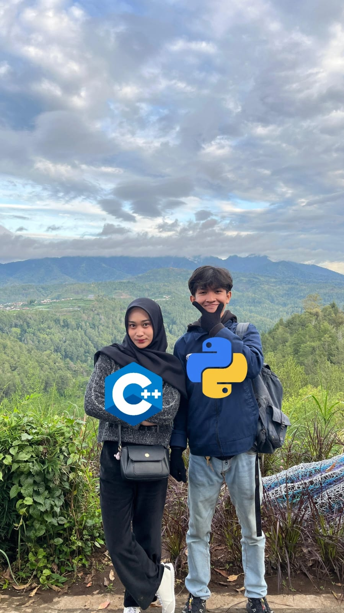
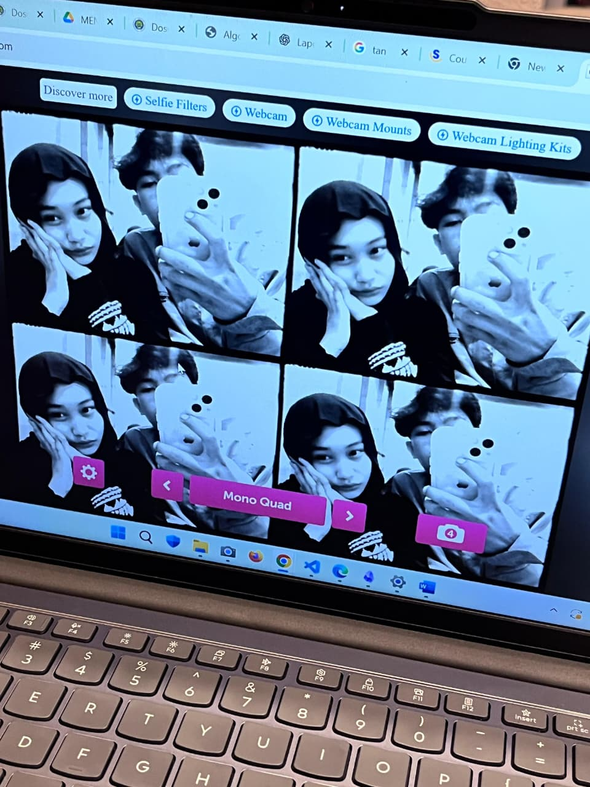
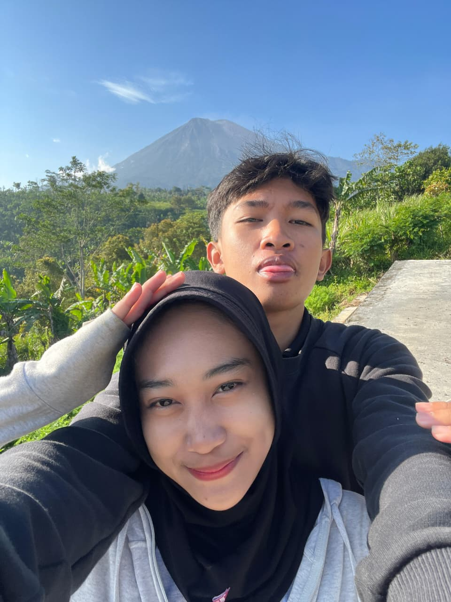
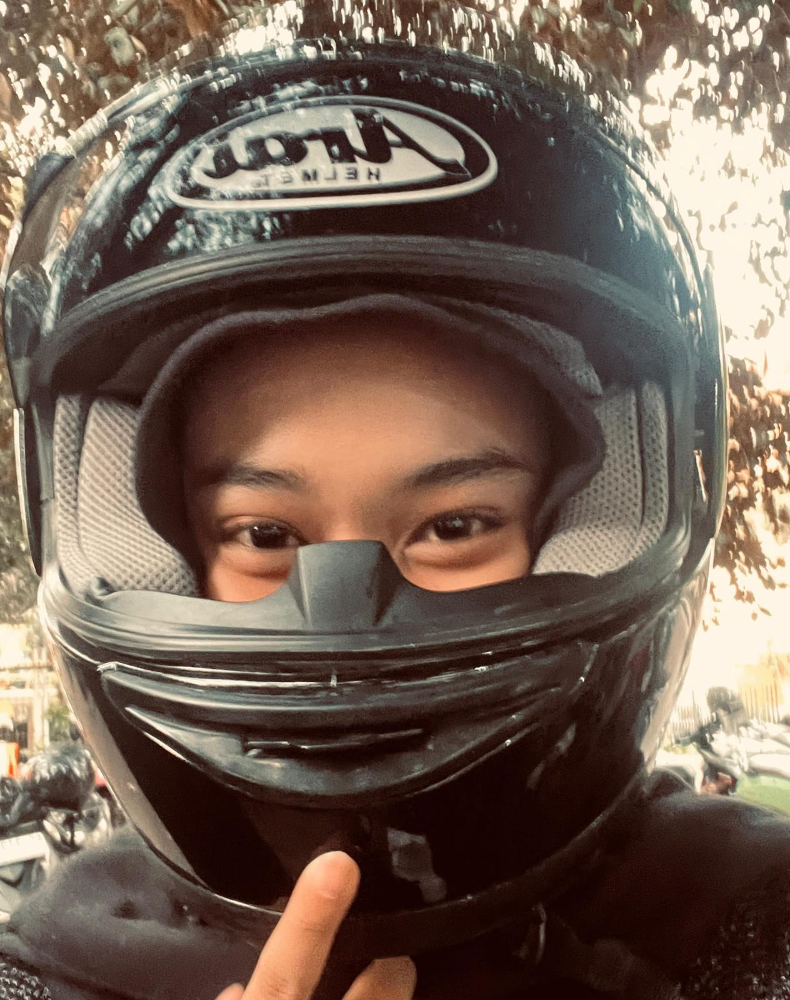
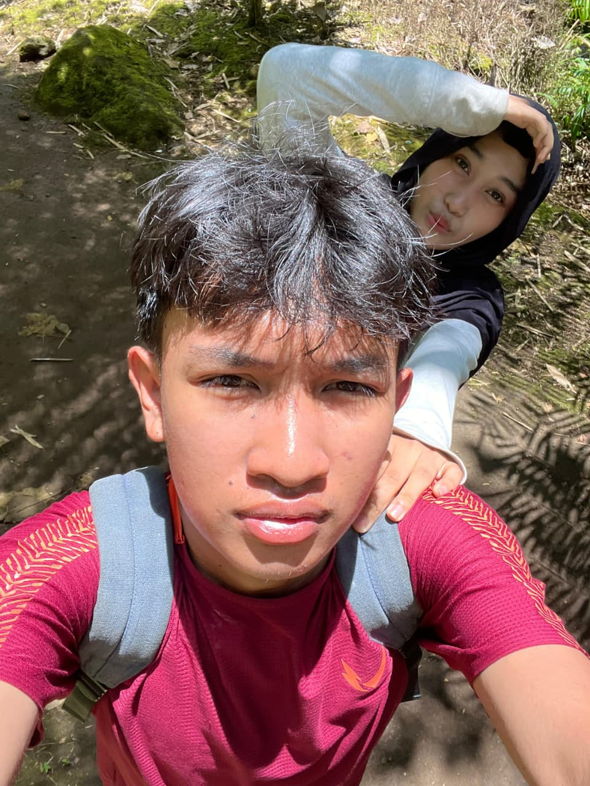

~ anomali kediri kalimantan

Paralayang
⭐
jujur seru,bagus baik seneng juga karena kesini sama kamu
dan ngerasa safe aja dan tenang karena ada hama kediri

just us ☁️
💫
Waktu itu kita duduk diem aja, nggak ngapa-ngapain.
Tapi entah kenapa itu salah satu saat yang paling aku suka.
Diam bareng kamu lebih nyaman dari ribut sama siapapun.

golden hour 🌅
Cahaya pagi itu jatuh tepat di wajahmu,
dan aku cuma bisa mikir: ini terlalu indah buat aku sendirian yang lihat.
Makasih udah ada di frame hidupku. 🌻

racing
🎀CIPOOO JOKI RACING
— candid terbaik seumur hidup ❤️
forever 💗
🌸Our First Tracking To Kapas Biru
Lumajangg